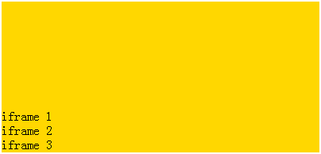
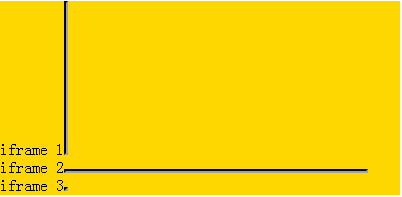
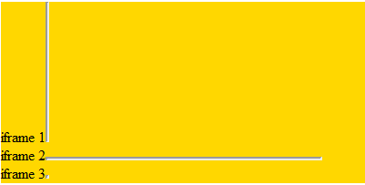
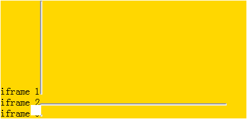

根据 CSS 2.1 规范中的描述：
关于 'width' 和 'height' 的更多信息，请参考 CSS 2.1 规范 10.2 Content width: the 'width' property 和 10.5 Content height: the 'height' property 中的内容。
关于 'border-width' 和 'border-style' 的更多信息，请参考 CSS 2.1 规范 8.5.1 Border width: 'border-top-width', 'border-right-width', 'border-bottom-width', 'border-left-width', and 'border-width' 和 8.5.3 Border style: 'border-top-style', 'border-right-style', 'border-bottom-style', 'border-left-style', and 'border-style' 中的内容。
在 IE6 IE7 IE8 中，'width' 或 'height' 任意一个或两个都设置为 '0' 的 IFRAME 元素是不可见的，而在其它浏览器中这样设置后的 IFRAME 元素仍可见。
该问题将造成局部布局错乱或视觉效果有差异。
| 所有浏览器 |
|---|
IFRAME 元素的默认样式在各浏览器下是不同的，其 'border-style' 的默认值在 IE 中是 'none'，在其他浏览器中则为 'inset'，而其 'border-width' 的默认值在 IE 中是 'medium'，在其他浏览器中则为 '2px'。也就是说，默认情况下，IFRAME 的边框在 IE 中是不可见的，而在其他浏览器中则可以看到 2px 宽的边框。1
因此即便设置其宽或高为 0，也只能保证在 IE 中不可见，在其他浏览器中，其边框则是可见的。
测试代码如下（本问题不区分浏览器模式）：
<div style="width:400px; background:gold;"> <span>iframe 1</span><iframe
style="width:0;"></iframe><br/> <span>iframe 2</span><iframe
style="height:0;"></iframe><br/> <span>iframe 3</span><iframe
style="width:0; height:0;"></iframe> </div>
这段代码各浏览器中的表现如下：
| IE6 IE7 IE8 |  |
|---|---|
| Firefox |  |
| Safari |  |
| Chrome |  |
可见：通过使用零宽高隐藏 IFRAME 仅在 IE 中可行，在其他浏览器中无法实现。
注：
根据实际情况选择使用 'visibility:hidden' 或者 'display:none' 隐藏 IFRAME 。
| 操作系统版本: | Windows 7 Ultimate build 7600 |
|---|---|
| 浏览器版本: |
IE6
IE7 IE8 Firefox 3.6 Chrome 4.0.302.3 dev Safari 4.0.4 |
| 测试页面: | ... |
| 本文更新时间: | 2010-07-20 |
width height 0 IFRAME 零宽高 隐藏